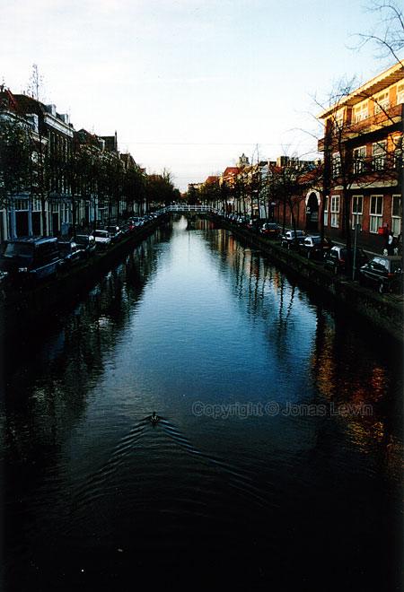

Holland, Delft, 2001.
|
Whenever
you want to take a photo in Delft (and in the rest of Holland), you end up
having to turn the camera 90 degrees to get everything you want in the
picture. Most of it is built very very tall, and not so wide. Quite the opposite of USA. It's quite surprising that Holland has so tall buildings, but I guess they make it that way to compensate for the extremely flat landscape.
|